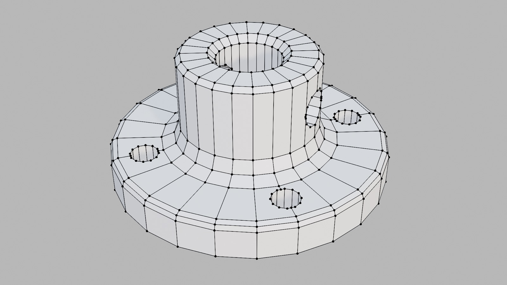
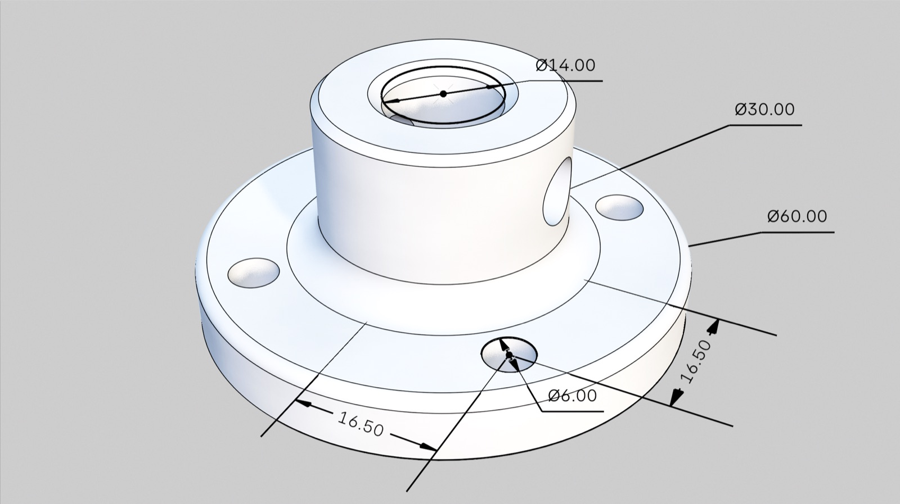
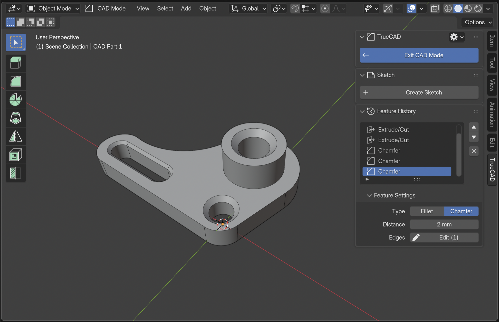
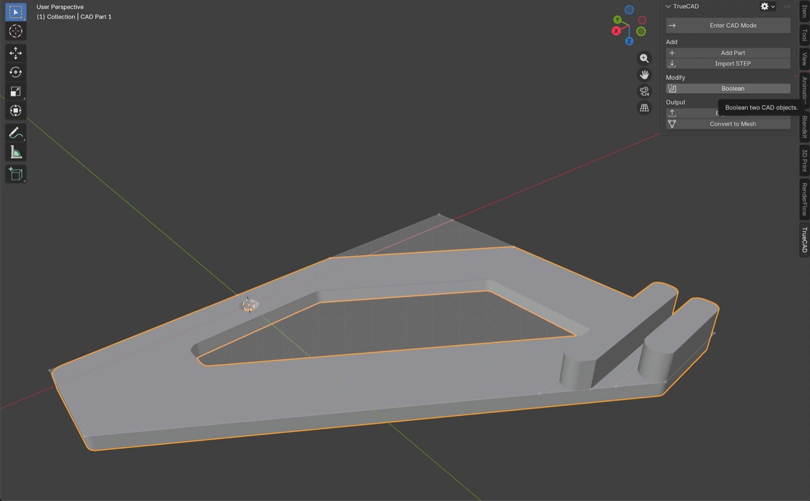
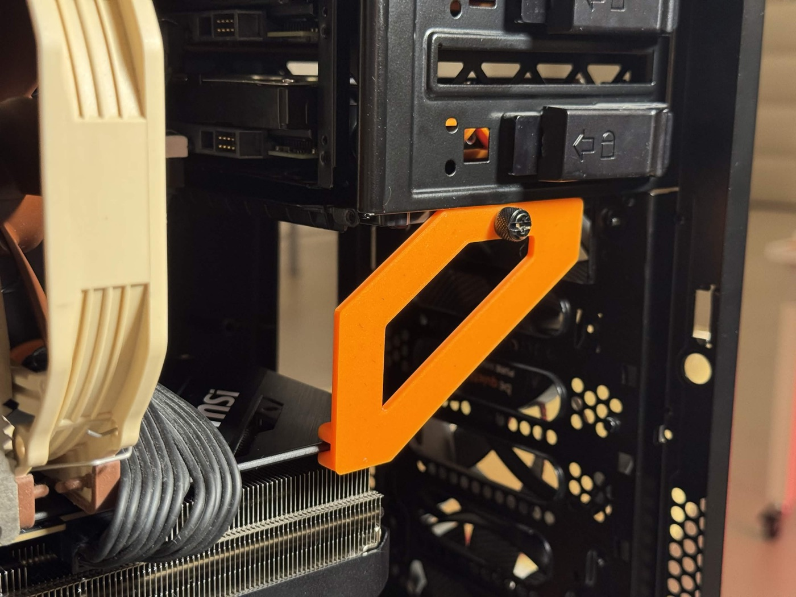

Parametric CAD that feels like Blender
2D Sketch • Feature History Rebuild • STEP In/Export
You already know how to use it
Feature History
Change a Dimension, Everything Updates
Every operation is adjustable in the Feature History, similar to Blender modifiers and other CAD tools. Change the first sketch and every step after it updates.
How it works
Shift A → CAD Part
A CAD Part is a new type of object, just like Mesh and Curve. Start from a Sketch, Primitive or CAD Plane.
The Technology
Real CAD, inside Blender
Most CAD-style tools in Blender end with a regular mesh. TrueCAD brings the power and precision of CAD into Blender. It builds a true solid with exact surfaces and edges, the same geometry dedicated CAD software uses.

Mesh
TrueCAD solidA circle is flat faces between points. It's hard to model precisely, adjust dimensions later and export with precision as STEP.
A circle is a circle. Round edges stay round at any zoom, and the part exports as STEP for printing, manufacturing or other CAD tools.
The workflow
Tab → CAD Mode
CAD mode is just like Edit mode. Select a CAD Part, enter CAD mode and start building.
Sketch with real constraints and dimensions
Lines, rectangles, circles and slots that snap as you draw. Dimension to exact values, or leave it loose.
Extrude and CutE
Join, cut, intersect, symmetric or through all. Drag with the gizmo or type an exact distance.
Fillet and ChamferCtrl B
True rounded and beveled edges that stay exact at any zoom. Always adjustable later.
Booleans
Union, subtract or intersect CAD parts.
LoftO
Blend two sketches into one smooth solid.
RevolveV
Spin a profile around an axis to make bottles, knobs, wheels and more.
ShellI
Hollow out a part with a set wall thickness, then edit it any time.Useful for enclosures, containers and more.
MirrorM
Mirror a body or features across a plane.
Section ViewK
Smoothly slice the part to look inside, without changing the model or slow boolean cuts.
Export for the real world
Export STEP for precision manufacturing and CAD software. Convert to a regular Blender model (mesh) in one click. Or just render it in the scene.
Import STEP files as real solids and keep editing them without losing quality. Then, export STEP for precision manufacturing or other CAD software.
Who it's for
For people that love CAD

Precise Parts
Type in exact dimensions and the parts will come out the exact size you drew them. Easy to adjust dimensions afterwards for the next version of your part.
Model and render in one file
Build it precisely, then light, render and animate it without having to go to another program and back.
Your way into Blender
Think in sketches, dimensions and features. Model the way you do in CAD, and get access to Blender's rendering and animation.
From the users
Made with TrueCAD

Modeled in TrueCAD
Printed and installedA TrueCAD user made this GPU bracket
Features
Everything you need for precise parts
- Core
- Feature HistoryScrub back, edit any step, live rebuild
- STEP Import and ExportImport as real solids, export for any CAD
- SketchesLine, rectangle, circle, slot, trim
- Constraints and DimensionsCoincident, parallel, tangent, length, angle and more
- Modeling tools
- Extrude and CutJoin, cut, intersect, symmetric, through all
- RevolveSpin a profile around an axis
- Fillet and ChamferTrue rounded and beveled edges
- ShellHollow out a part with a set wall thickness
- BooleansBetween CAD parts, or with regular meshes
- MirrorMirror a body or features across a plane
- LoftBlend between two or more sections
- Section ViewSlice the part to look inside
Model your first real part today
Parametric CAD inside the app you already know.
- Real CAD precision in Blender
- 2D sketching and STEP support
- Editable feature history
- One-time purchase, every update included
- Full documentation
- 14-day refund, no questions asked
Blender 5.0+ • Windows • macOS
Linux is not supported yet. Join our Discord to follow progress
What’s next
The Roadmap
Buy once, get every update below.
- Already built
- Core CAD Engine and STEP Import ExportBuild true solid models, and bring STEP files in and out of Blender with full precision.
- 2D SketchingDraw dimensioned sketches and turn them into solids.
- Fundamental CAD Features and Feature HistoryEdit an earlier step and the whole model rebuilds.
- Next up
- Linear and circular patternsRepeat a feature along a line or around an axis, like bolt circles and vent grids.
- HolesCounterbore and countersink holes sized for standard screws.
- More sketch toolsOffset, fillet and spline inside sketches.
- SweepPull a profile along a path for handles, tubes and cable channels.
- RibAdd thin supporting walls to stiffen enclosures, brackets and mounts.
- Clean quad mesh exportTurn parts into quad topology for subdivision, sculpting or game assets.
- Later
- 2D drawings and DXF exportFor laser cutting, CNC and documentation.
- Dimensions in rendersShow measurements directly in Cycles and EEVEE renders, for product sheets and manuals.
Missing something? Vote and suggest features in the TrueCAD Discord →
Hi, I'm
I'm a designer-engineer from The Netherlands. I wrote my Msc thesis at the Blender Foundation and built the design system that is now used to design Blender itself. TrueCAD comes from the same belief: new power should feel like it was always part of Blender. Made with care by an individual maker. Thank you for your support.
FAQ
Questions, answered
Is it as precise as dedicated CAD software?
Yes. TrueCAD builds true B-rep solids on a real CAD kernel, so geometry and STEP exports have the same precision as dedicated CAD tools.
Which Blender versions and operating systems does it support?
Blender 5.0 and newer on Windows and macOS. Linux is not supported yet. Join our Discord to follow progress.
How is this different from regular modeling in Blender?
Blender models are meshes: surfaces made of flat polygons. TrueCAD adds a new object type, a CAD Part, built on a real CAD kernel. A cylinder is a true cylinder, and a hole knows it’s a hole, so you can come back later and change its diameter. Press Tab to enter CAD edit mode, just like Blender’s own edit mode.
Can I import, edit and export STEP files?
Yes. Import a STEP file from Fusion, SolidWorks, Onshape or FreeCAD, edit it (for example, add a fillet), and export STEP again. Exports are true B-rep solids that open in any CAD tool.
Is it parametric and non-destructive?
Yes. Every feature keeps its own editable values in a history tree, similar to Blender’s modifier stack. Change an early dimension and the model rebuilds.
Can I use it for 3D printing?
Yes! CAD Parts convert to a normal Blender object (mesh) in one click. Then just drag it into your slicer.
Can I still edit or sculpt the mesh?
Yes. Convert any part to a regular mesh with one click.
Commercial use, updates and support?
Commercial use is allowed. Every future update is included. Start with the documentation; for bugs or questions, use the contact form.
What is the refund policy?
You have 14 days from purchase to ask for a full refund, no questions asked.
How is it different from CAD Sketcher?
CAD Sketcher gives you precise 2D sketches, but extruding them produces a normal Blender mesh. TrueCAD does both CAD sketching and CAD solids, so the 3D result stays an editable CAD model with feature history.